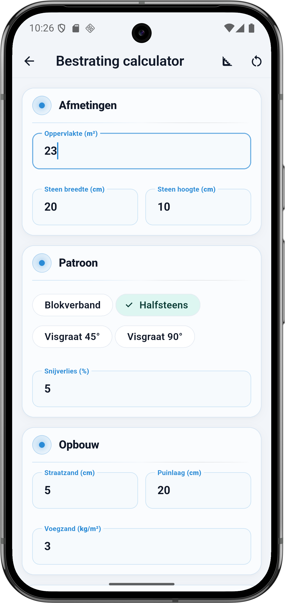
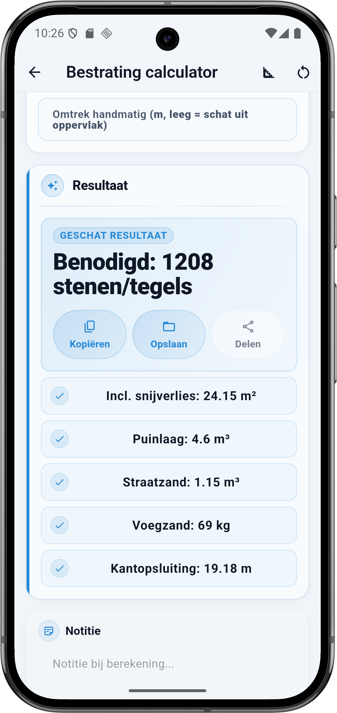

Wat vraagt de calculator
De Bestrating calculator heeft drie blokken plus één optioneel veld: Afmetingen, Patroon, Opbouw en Omtrek handmatig. Elk veld hieronder komt één-op-één overeen met de app.
Afmetingen
- Oppervlakte (m²) — de netto te bestraten oppervlakte. Trek vaste objecten eraf (bijvoorbeeld een bestaande boom of regenput). Een afvoerput of klein stopcontact zit in het snijverlies.
- Steen breedte (cm) — de breedte van één steen of tegel. Dikformaat 20 × 10 cm, waalformaat 20 × 5 cm, keien tot 30 × 20 cm.
- Steen hoogte (cm) — de lengte of hoogte van één steen. Samen met breedte bepaalt dit het oppervlak per steen.
Patroon
- Blokverband — stenen recht boven elkaar in blokken. Rustig beeld, 3 tot 5% snijverlies.
- Halfsteens — klassiek metselverband, elke rij een halve steen verspringend. 3 tot 5% snijverlies.
- Visgraat 45° — stenen diagonaal gelegd, altijd snijden bij de randen. 10 tot 15% snijverlies.
- Visgraat 90° — stenen in loodrechte V-vorm. 7 tot 12% snijverlies, afhankelijk van vorm van je terras.
- Snijverlies (%) — standaard 5% voor rechte patronen, 10 tot 15% voor visgraat. Verhoog bij veel randen of een niet-rechthoekig terras.
Opbouw
- Straatzand (cm) — standaard 5 cm. Dit is de laag waarop je stenen vlak komen te liggen. Minder voor klinkers (3 cm), meer voor zware tegels (5 tot 7 cm).
- Puinlaag (cm) — standaard 20 cm. De stabiele fundering onder het zand. Minder bij een vaste zandbodem (10 tot 15 cm), meer bij een losse of natte ondergrond (25 tot 30 cm).
- Voegzand (kg/m²) — standaard 3 kg per m² voor dicht voegzand. Reken 2 kg per m² bij smalle voegen (1 tot 2 mm) en 4 tot 5 kg bij bredere voegen (5 mm +).
Omtrek handmatig (optioneel)
- Omtrek handmatig (m, leeg = schat uit oppervlak) — vul de totale omtrek in als je terras een onregelmatige vorm heeft (L-vorm, met uitsparing). Laat leeg voor een vierkant of rechthoekig terras — dan schat de calculator de omtrek als 4 × √oppervlakte.
💡 Patroon en snijverlies
Blokverband en halfsteens zijn de goedkoopste leggingen qua materiaal — nauwelijks snijden. Visgraat vraagt structureel 10 tot 15% extra stenen (hoe steiler de hoek, hoe meer verlies). Een klein vierkant terras in visgraat kan zomaar 20% snijverlies hebben: reken daar niet te krap op.
De formule onder de motorkap
Bestrating is drie aparte berekeningen in één calculator: aantal stenen voor het oppervlak, m³ voor de opbouwlagen en meters voor de kantopsluiting.
Rekenvoorbeeld — terras 23 m² halfsteens
Dit is de situatie uit de screenshot: terras van 23 m², stenen 20 × 10 cm (dikformaat), halfsteens verband, 5 procent snijverlies. Opbouw: 5 cm straatzand op 20 cm puinlaag, voegzand 3 kg per m². Omtrek automatisch geschat.
Invoer
| Veld | Waarde |
|---|---|
| Oppervlakte | 23 m² |
| Steenformaat | 20 × 10 cm |
| Patroon | Halfsteens |
| Snijverlies | 5 % |
| Straatzand | 5 cm |
| Puinlaag | 20 cm |
| Voegzand | 3 kg/m² |
Berekening stap voor stap
- 23 m² × 1,05 (5% snijverlies) = 24,15 m² totaal te bestraten
- Eén steen 20 × 10 cm = 0,20 × 0,10 = 0,02 m² per steen
- 24,15 ÷ 0,02 = 1207,5 → afgerond 1208 stenen
- Puinlaag: 23 × 0,20 m = 4,6 m³ (netto, zonder snijverlies)
- Straatzand: 23 × 0,05 m = 1,15 m³
- Voegzand: 23 × 3 kg = 69 kg
- Kantopsluiting (geschat): 4 × √23 = 4 × 4,796 ≈ 19,18 m
Resultaat
| Onderdeel | Waarde |
|---|---|
| Benodigd stenen/tegels | 1208 |
| Incl. snijverlies | 24,15 m² |
| Puinlaag | 4,6 m³ |
| Straatzand | 1,15 m³ |
| Voegzand | 69 kg |
| Kantopsluiting | 19,18 m |
⚠️ Omtrek bij een vreemde vorm
De automatische schatting 4 × √oppervlak werkt alleen voor vierkante terrassen. Voor een lang smal terras of een L-vorm klopt die schatting niet — meet dan de omtrek zelf en vul 'Omtrek handmatig' in. Een lang terras van 2 × 11,5 m heeft bijvoorbeeld een omtrek van 27 m, bijna 40% meer dan de schatting van 19 m.
Patroon en stenen per m²
Verschillende steenformaten en patronen leveren verschillende aantallen stenen per m². Hier de meest voorkomende combinaties voor 23 m²:
| Formaat (cm) | Per m² | Patroon | Nodig op 23 m² |
|---|---|---|---|
| 20 × 10 (dikformaat) | 50 | Halfsteens 5% | 1208 |
| 20 × 10 (dikformaat) | 50 | Visgraat 45° 12% | 1288 |
| 20 × 5 (waalformaat) | 100 | Halfsteens 5% | 2415 |
| 30 × 20 (betontegel) | 16,7 | Blokverband 3% | 396 |
| 60 × 60 (keramische terrastegel) | 2,8 | Blokverband 5% | 68 |
Zo doe je dit in BuildExact
- Open de Bestrating calculator onder Materialen. Je ziet meteen 'Afmetingen' bovenin.
- Vul oppervlakte, steen breedte en hoogte in. Dikformaat 20 × 10 is standaard voor klinkers.
- Kies patroon en pas snijverlies aan — 5% voor blokverband/halfsteens, 10 tot 15% voor visgraat.
- Opbouw instellen: 5 cm straatzand, 20 cm puin (standaard), 3 kg voegzand per m². Pas aan voor zware tegels of natte ondergrond.
- Omtrek handmatig als vorm vreemd is — bij L-vorm, lange smalle strook of ronde terras meet je de omtrek zelf. Daarna bewaren of delen vanuit de resultaatkaart.
Veelgestelde vragen
🧱 Reken je bestrating in BuildExact
Gratis in de app. Reken, bewaar als project, zet om in een offerte-PDF met je logo — allemaal zonder opnieuw te typen.
Gratis downloaden